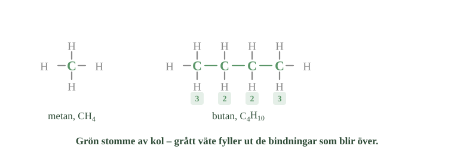
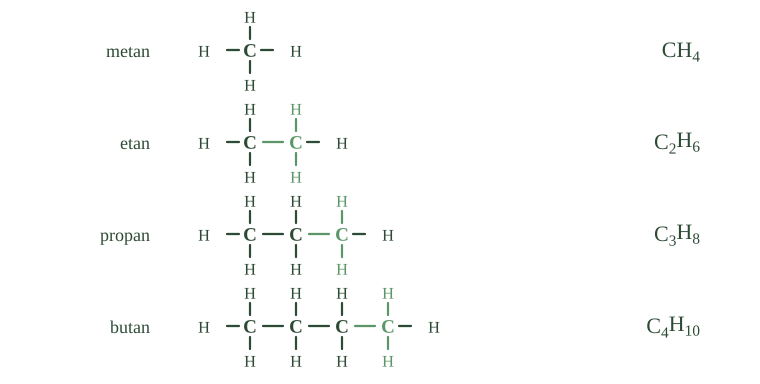
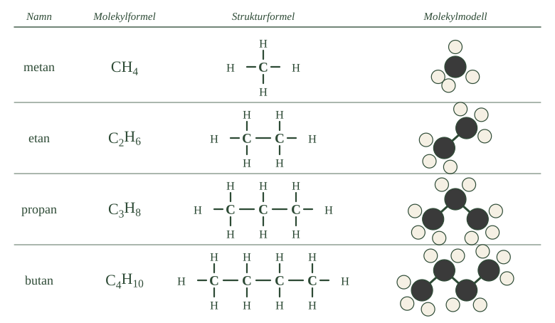
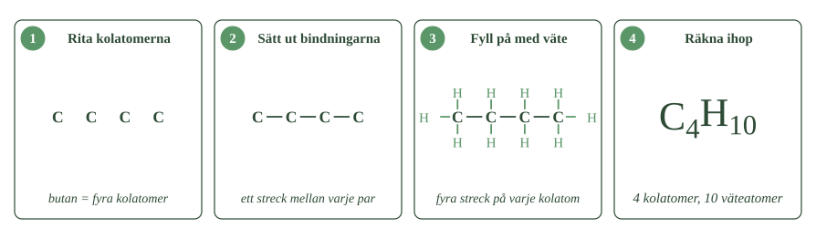

- Vilka atomslag får finnas i ett kolväte?
- Hur många bindningar kan en kolatom bilda, och hur många kan en väteatom bilda?
- Vad menas med att kolatomerna bildar molekylens stomme?
- Hur många väteatomer bär en kolatom som sitter mitt i en kedja?
- Varför är bensin inte ett enda kemiskt ämne?
Kolväten finns i nästan alla bränslen vi använder. Diesel i bussen, gasol i grillen, bensin i bilen. Trots att det finns mycket många olika kolväten är de byggda av bara två sorters atomer: kol och väte. Det som skiljer dem åt är hur många kolatomer de har, och hur kolatomerna sitter ihop.
Två atomslag, inget mer
Ett kolväte är ett ämne som bara innehåller två sorters atomer: kol och väte.
Inga syreatomer. Inga kväveatomer. Ingenting annat. Det är därför kolvätena är den enklaste sortens kolförening — det finns inte färre atomslag att bygga med.
Byggsatsen har bara två regler
Från förra delkapitlet vet du två saker.
En kolatom kan bilda fyra bindningar. En väteatom kan bilda en enda.
Det är hela byggsatsen. Kolatomer kan binda till varandra och till väte. Väteatomer kan bara sitta fast på ett ställe, och kan alltså aldrig binda ihop två saker.
Det enklaste kolvätet är metan, \(\ce{CH4}\). En kolatom med fyra väteatomer runt sig. Kolatomen använder alla sina fyra bindningar, och varje väteatom sin enda.
Kolatomerna bildar en stomme
När flera kolatomer är med bildar de en kedja. Man kan se kedjan som molekylens stomme.
Varje kolatom ska ha fyra bindningar. Om en kolatom binder till en annan kolatom har den använt en bindning. Tre är kvar, och de går till väteatomer.
Ta etan. Två kolatomer sitter ihop. Varje kolatom använder en bindning till den andra och har tre kvar. Det blir tre väteatomer på varje kolatom, alltså sex totalt. Formeln blir \(\ce{C2H6}\).
En kolatom som sitter mitt i en längre kedja binder åt två håll. Då är bara två bindningar kvar till väte.
Väteatomerna fyller alltså ut det som blir över. Vet du hur kolatomerna sitter, kan du räkna ut hur många väteatomer molekylen har.
- Räkna strecken vid varje grön kolatom. Blir det fyra överallt?
- Varför bär kolatomerna i mitten färre väteatomer än de i ändarna?
- Hur många väteatomer skulle en kolatom bära om den satt mitt i kedjan och band åt två håll

Kolväten finns i bränslen
Många bränslen består mest av kolväten. Naturgas är nästan bara metan. Gasol innehåller propan och butan.
Men bensin och diesel är inte ett enda ämne. De är blandningar av många olika kolväten, med olika långa kedjor.
Vilka kolväten som finns i ett bränsle avgör hur lätt det avdunstar och när det kokar. Hur blandningarna görs tittar vi på senare.
- Vilka atomslag får finnas i ett kolväte?
- Hur många bindningar kan en kolatom bilda, och hur många kan en väteatom bilda?
- Vad menas med att kolatomerna bildar molekylens stomme?
- Hur många väteatomer bär en kolatom som sitter mitt i en kedja?
- Varför är bensin inte ett enda kemiskt ämne?
Kolväten finns runt omkring oss i många av de bränslen vi använder. Diesel driver bussar och lastbilar, fotogen används som flygbränsle, gasol i grillar och campingkök, och bensin driver fortfarande många bilar. Kolväten har haft avgörande betydelse för industrins och transporternas utveckling sedan 1800-talet.
Trots att det finns mycket många olika kolväten är de uppbyggda av bara två sorters atomer: kol och väte. Det som skiljer dem åt är hur många kolatomer de innehåller och hur kolatomerna är bundna till varandra.
Kolväten är den enklaste sortens kolförening
Ett kolväte är en kolförening som bara innehåller kolatomer och väteatomer. Det finns alltså inga syreatomer, kväveatomer eller andra atomslag i ett rent kolväte.
En kolatom kan bilda fyra bindningar. En väteatom kan bara bilda en. Det är hela byggsatsen: kolatomer kan binda till varandra och till väte, medan varje väteatom bara kan sitta fast på ett enda ställe.
Det enklaste kolvätet är metan, \(\ce{CH4}\), där kolatomen använder alla sina fyra bindningar till var sin väteatom.
Väteatomerna sitter där kolkedjan inte binder till sig själv
I ett kolväte kan man se kolatomerna som molekylens stomme. De sitter efter varandra i en kedja, och väteatomerna sitter runt om.
Varje kolatom ska sammanlagt ha fyra bindningar. Binder den till en annan kolatom har den använt en av dem, och tre återstår till väte.
I etan sitter två kolatomer ihop. Varje kolatom använder en bindning till den andra och har tre kvar till väte. Molekylen får sex väteatomer, och molekylformeln blir \(\ce{C2H6}\).
En kolatom mitt i en längre kedja binder åt två håll och har bara två bindningar kvar till väte.
Väteatomerna fyller alltså ut de bindningar som inte används mellan kolatomerna. Den principen gör att man kan räkna ut hur många väteatomer ett kolväte ska innehålla, om man vet hur kolatomerna sitter ihop.
Kolväten finns i bränslen vi använder dagligen
Många vanliga bränslen består till största delen av kolväten. Naturgas är mest metan, och gasol innehåller framför allt propan och butan.
Men bensin och diesel är inte ett enda kemiskt ämne. De är blandningar av flera olika kolväten, med olika långa kolkedjor och därför olika egenskaper.
Vilka kolväten ett bränsle innehåller påverkar hur lätt det avdunstar och vid vilken temperatur det kokar. Hur blandningarna framställs undersöker vi längre fram.
---
Väteatomerna är ingen utfyllnad
Standardtexten beskriver kolkedjan som en stomme och väteatomerna som något som fyller ut de bindningar som blir över. Det är en användbar bild när man ska räkna atomer, men den ger fel uppfattning om vad som faktiskt håller ihop molekylen.
En bindning mellan kol och väte är inte svagare eller mindre viktig än en bindning mellan två kolatomer. Tvärtom: en C–H-bindning är något starkare än en C–C-bindning. Det krävs mer energi att slita loss en väteatom från en kolatom än att bryta kedjan mitt itu.
Det märks när kolväten brinner. Reaktionen bryter både C–H- och C–C-bindningar, och den startar inte av sig själv — den kräver en gnista eller en låga, eftersom bindningarna är starka åt båda hållen.
Varför ritar vi då kolkedjan som en stomme? Därför att det är kolatomerna som varierar. Väteatomerna sitter alltid på samma sätt, en bindning var, och bär ingen information om vilket ämne det är. Kolskelettet gör det. En kemist som vill veta vilket ämne hon har på bordet tittar på kolatomerna, inte på vätet.
Om modellen. Stomme och utfyllnad är en beskrivning av vad som är intressant att titta på, inte av vad som är starkt. Molekylen själv gör ingen sådan skillnad — där finns bara atomer och bindningar, och den mellan kol och väte hör till de starkare.
- Vad är det som växer för varje steg i alkanserien?
- Varför följer inte metan, etan, propan och butan namnmönstret?
- Vad är skillnaden mellan två grannar i serien?
- Hur räknar du ut molekylformeln för en alkan om du vet antalet kolatomer?
- Vad kännetecknar bindningarna mellan kolatomerna i en alkan?
En serie där varje ämne har en kolatom mer
En stor grupp kolväten kallas alkaner. De går att ställa upp i en serie, där varje nytt ämne har en kolatom mer än det förra:
metan – etan – propan – butan – pentan – hexan – heptan – oktan
Metan har en kolatom. Etan har två. Propan tre, butan fyra, och så vidare upp till oktan som har åtta.
Namnen från pentan och framåt är räkneord
Från och med pentan känns namnen igen. Pent- betyder fem, hex- sex, hept- sju och okt- åtta. Samma ord finns i hexagon och oktober.
De fyra första namnen — metan, etan, propan, butan — följer inte det mönstret. De är äldre namn som fanns innan systemet skapades, och de fick vara kvar.
Serien tar inte slut vid oktan. Det finns alkaner med tjugo kolatomer, och betydligt fler än så.
- Jämför de gröna delarna. Är de lika stora i alla rader?
- Följ molekylformlerna nedåt. Hur ändras siffrorna?
- Vad skulle nästa rad i trappan heta, och vilken molekylformel skulle den få?

För varje steg kommer två väteatomer till
Titta på formlerna:
\(\ce{CH4}\) · \(\ce{C2H6}\) · \(\ce{C3H8}\) · \(\ce{C4H10}\)
Från metan till etan kommer en kolatom och två väteatomer till. Från etan till propan samma sak. Från propan till butan samma sak igen.
Skillnaden mellan två grannar i serien är alltså alltid \(\ce{CH2}\).
Det betyder inte att en färdig \(\ce{CH2}\)-bit sätts fast. Det är bara skillnaden mellan två molekyler.
En regel för alla alkaner
Mönstret går att skriva som en regel. Om en alkan har n kolatomer, där n kan vara vilket tal som helst, så har den formeln:
Testa den. Har alkanen fem kolatomer blir det 2 × 5 + 2 = 12 väteatomer, alltså \(\ce{C5H12}\). Har den åtta kolatomer blir det 2 × 8 + 2 = 18, alltså \(\ce{C8H18}\).
Ju längre kedjan är, desto fler väteatomer behövs för att alla kolatomer ska få sina fyra bindningar.
Alkaner har bara enkelbindningar
Det som gör en alkan till en alkan är att alla bindningar mellan kolatomerna är enkelbindningar — ett elektronpar, ett streck.
I etan finns ett sådant streck mellan kolatomerna. I propan två. I butan tre. Antalet streck är alltid en mindre än antalet kolatomer.
Hela gruppen kallas alkanserien.
Längre fram möter du kolväten där kolatomerna sitter ihop med två eller tre streck i stället. De hör till andra grupper och har andra namn.
- Vad är det som växer för varje steg i alkanserien?
- Varför följer inte metan, etan, propan och butan namnmönstret?
- Vad är skillnaden mellan två grannar i serien?
- Hur räknar du ut molekylformeln för en alkan om du vet antalet kolatomer?
- Vad kännetecknar bindningarna mellan kolatomerna i en alkan?
Det finns en serie kolväten där varje nytt har en kolatom mer
En viktig grupp av kolväten kallas alkaner. De kan ordnas i en serie där varje nytt ämne innehåller en kolatom mer än det föregående:
metan – etan – propan – butan – pentan – hexan – heptan – oktan
Från pentan och framåt känns räkneprefixen igen. Pent- betyder fem, hex- sex, hept- sju och okt- åtta. De fyra första har äldre namn som behållits, och följer därför inte mönstret.
Serien fortsätter långt efter oktan. Det finns alkaner med tjugo kolatomer och fler. Principen är hela tiden densamma.
För varje kolatom tillkommer två väteatomer
Jämför man molekylformlerna syns ett mönster. Från metan till etan tillkommer en kolatom och två väteatomer. Samma sak från etan till propan, och från propan till butan.
Skillnaden mellan två grannar i serien är alltså alltid \(\ce{CH2}\). Det betyder inte att en \(\ce{CH2}\)-molekyl fästs på — \(\ce{CH2}\) beskriver bara skillnaden.
Mönstret kan skrivas som en regel. En alkan med n kolatomer har molekylformeln:
Med fem kolatomer blir det \(\ce{C5H12}\). Med åtta blir det \(\ce{C8H18}\).
Ju fler kolatomer i kedjan, desto fler väteatomer behövs för att alla kolatomer ska få sina fyra bindningar.
Alla alkaner har bara enkelbindningar
Det som kännetecknar en alkan är att alla bindningar mellan kolatomerna är enkelbindningar.
En enkelbindning består av ett gemensamt elektronpar och ritas som ett streck.
I etan finns en enkelbindning mellan kolatomerna, i propan två och i butan tre. Antalet bindningar mellan kolatomerna är alltid en mindre än antalet kolatomer.
Gruppen av sådana ämnen kallas alkanserien.
Senare möter vi kolväten där det finns dubbelbindningar eller trippelbindningar mellan kolatomerna. De tillhör andra grupper och får andra namn.
---
Regeln \(\mathrm{C}_{n}\mathrm{H}_{2n+2}\) gäller bara raka och grenade kedjor
Standardtexten ger regeln som om den gällde alla alkaner. Det gör den inte, och undantaget är lärorikt.
Tänk på en kolkedja med sex kolatomer. Har den två ändar får ändkolatomerna tre väteatomer var och de fyra i mitten två var — sammanlagt fjorton, alltså \(\ce{C6H14}\). Regeln stämmer: 2 × 6 + 2 = 14.
Men kolatomer kan också bindas samman så att kedjan sluts till en ring. Då finns inga ändar kvar. Varje kolatom binder till två grannar och bär två väteatomer. Sex kolatomer ger då tolv väteatomer, inte fjorton. Ämnet heter cyklohexan och har formeln \(\ce{C6H12}\).
Slutningen kostar alltså två väteatomer. Det är samma två som satt på ändarna innan kedjan slöts.
Regeln \(\mathrm{C}_{n}\mathrm{H}_{2n+2}\) förutsätter därför en öppen kedja. Skillnaden på två väteatomer mellan en öppen och en sluten kedja med lika många kolatomer är inte en detalj — den återkommer i avsnitt 3, där en dubbelbindning kostar exakt lika mycket.
Om modellen. Formeln är korrekt inom sitt område, och det området är öppna kedjor, raka som grenade. En formel utan angivet giltighetsområde är halva formeln. Det är värt att lägga märke till varje gång du möter en regel i kemin: fråga vad den förutsätter.
- Vad visar en molekylformel, och vad visar den inte?
- Hur kan du kontrollera att en strukturformel är riktigt ritad?
- Vad visar molekylmodellen som de andra två inte gör?
- Varför har kolatomerna och väteatomerna olika färg i en modell?
- I vilken ordning gör du de fyra stegen när du ritar en strukturformel?
Tre sätt att beskriva samma molekyl
En molekyl går att visa på flera sätt, beroende på vad man vill få fram. De tre vanligaste är molekylformel, strukturformel och molekylmodell.
De visar olika saker. Ingen av dem är fel — de svarar bara på olika frågor.
Molekylformeln räknar
En molekylformel talar om vilka atomer som finns med och hur många.
Butan har formeln \(\ce{C4H10}\). Fyra kolatomer, tio väteatomer.
Det formeln inte säger är hur atomerna sitter ihop. Den räknar, den ritar inte.
- Räkna strecken mellan kolatomerna i varje rad. Hur ändras antalet nedåt?
- Jämför strukturformeln och modellen för butan. Vad ser olika ut?
- Vilken kolumn skulle du välja om du ville veta hur molekylen är formad?

Strukturformeln visar bindningarna
I en strukturformel ritas varje bindning som ett streck mellan två atomer.
Nu syns det som molekylformeln dolde: vilken atom som sitter bunden till vilken.
Det finns en regel som alltid gäller, och som du kan använda för att kontrollera din egen ritning:
Varje kolatom ska ha fyra streck. Varje väteatom ska ha ett.
Räkna strecken runt en kolatom i taget. Blir det inte fyra är något fel.
Molekylmodellen visar formen
En molekylmodell visar molekylen som ett bygge av kulor. Kolatomerna ritas som större och mörkare kulor, väteatomerna som mindre och ljusare.
Färgerna är en överenskommelse mellan kemister. Riktiga atomer har inga färger alls.
Modellen visar en sak som en ritning på papper döljer: molekylen är inte platt. Bindningarna från en kolatom pekar åt olika håll i rummet, ungefär som pinnarna i en boll.
En kolkedja som ritas rak på pappret är i verkligheten vinklad, som ett sicksack.
Så ritar du en strukturformel
Ta butan som exempel. Det går i fyra steg.
Steg 1. Namnet butan betyder fyra kolatomer. Rita fyra C efter varandra.
Steg 2. Sätt streck mellan kolatomerna, och streck ut åt sidorna där det fattas. Varje kolatom ska ha fyra streck totalt.
Steg 3. Sätt ett H på varje ledigt streck. Kolatomerna i ändarna får tre väteatomer var, de i mitten två var.
Steg 4. Räkna ihop. Fyra kolatomer, tio väteatomer. Molekylformeln blir \(\ce{C4H10}\).
Metoden fungerar för alla alkaner. Det enda som ändras är hur många kolatomer du börjar med.
- Jämför ruta 2 och ruta 3. Vad har kommit till?
- Räkna de gröna väteatomerna i ruta 3. Stämmer de med siffran i ruta 4?
- Hur skulle ruta 1 se ut om du ritade propan i stället?

- Vad visar en molekylformel, och vad visar den inte?
- Hur kan du kontrollera att en strukturformel är riktigt ritad?
- Vad visar molekylmodellen som de andra två inte gör?
- Varför har kolatomerna och väteatomerna olika färg i en modell?
- I vilken ordning gör du de fyra stegen när du ritar en strukturformel?
Kemister beskriver molekyler på olika sätt beroende på vad de vill visa. Ett kolväte kan representeras med molekylformel, strukturformel och molekylmodell. De visar olika saker om samma molekyl.
Molekylformeln räknar atomerna
En molekylformel visar vilka atomslag som finns och hur många atomer det finns av varje slag. Butan har molekylformeln \(\ce{C4H10}\) — fyra kolatomer och tio väteatomer.
Molekylformeln visar däremot inte hur atomerna sitter bundna till varandra.
Det spelar roll när molekylerna blir större, eftersom samma molekylformel ibland kan motsvara flera olika molekyler. Det undersöker vi i avsnitt 3.
Strukturformeln visar bindningarna
En strukturformel visar hur atomerna är bundna till varandra. Bindningarna ritas som streck.
När man ritar eller granskar en strukturformel gäller en enkel regel:
Varje kolatom ska ha sammanlagt fyra bindningar och varje väteatom en.
Strukturformeln går därför att kontrollräkna. Titta på en kolatom i taget och räkna strecken runt den.
Molekylmodellen visar formen
En molekylmodell visar molekylen som en tredimensionell struktur. Atomerna ritas som kulor: kol som mörka och större, väte som ljusare och mindre. Färgerna är en överenskommelse — riktiga atomer har inte några färger.
Modellen visar något som en strukturformel på papper döljer: molekylen är inte platt. Bindningarna från en kolatom pekar åt olika håll i rummet. En kolkedja som ritas rak på pappret är i verkligheten vinklad.
Så ritar du en strukturformel
Med butan som exempel går det i fyra steg: rita kolatomerna utifrån namnet, sätt ut bindningarna mellan dem, fyll på med väteatomer där bindningar saknas, och räkna ihop till en molekylformel.
Samma metod fungerar för alla alkaner, hur långa de än är. Det enda som ändras är hur många kolatomer du börjar med.
Den raka kedjan är varken rak eller stilla
Standardtexten säger att molekylen inte är platt, och att en kedja som ritas rak i verkligheten är vinklad. Det stämmer, men det är bara halva saken.
Vinkeln kommer av att kolatomens fyra bindningar pekar mot hörnen av en tetraeder, med ungefär 109,5 grader emellan. En kolkedja kan därför aldrig bli en rak linje. Den blir ett sicksack, oavsett hur den ritas.
Den andra halvan är att molekylen rör sig. Kring en enkelbindning kan de två halvorna av molekylen vrida sig fritt i förhållande till varandra, och det sker hela tiden vid vanlig temperatur — miljarder gånger i sekunden.
En butanmolekyl är därför inte en bestämd form. Den är en molekyl som hela tiden byter form: utsträckt i ett ögonblick, ihopvikt i nästa, och så vidare.
Det har en följd som är viktig längre fram. Två strukturformler som ser olika ut på pappret — en rak kedja och en som böjer sig — kan vara samma ämne, om man kan komma från den ena till den andra bara genom att vrida kring enkelbindningar. Det är först när man måste bryta en bindning för att komma från den ena till den andra som det handlar om två olika ämnen.
Om modellen. Strukturformeln visar vad som sitter bundet till vad. Det är precis vad den ska visa, och den gör det bra. Men den visar varken vinklar eller rörelse, och båda finns där. När du i avsnitt 3 ska avgöra om två ritningar föreställer samma ämne är det rörelsen som avgör — inte hur de ser ut på pappret.
Laddar övningskort…
Laddar frågor ...